(2007-04-18 15:36:09)
本来要继续写上节所遗留的第一个中枢形成后走势类型的分类问题，【韶山映山红】什么时候又讲这个问题了？以后要梳理一下。★★★】但发现太多人，连每天如何看盘都搞不清楚，这事情可能更迫切，所以先说一下。
当然，如果是按某级别的严格操作，每天具体怎么走是关系不大的，走势不会因为交易是按天来的就有什么本质的不同。但针对每天的走势进行一些分类，至少是一个好的辅助。【韶山映山红】走势不会有什么本质的不同。K线却可能有。每一天的开盘价、收盘价、最高价、最低价有相应的市场意义，分钟图上的不一定有足够的市场意义。】
一天的交易是4小时，等于有8个30分钟K线组成的一个系统。把3个相邻30分钟K线的重叠部分当成一个每天走势上的一个中枢，那么，一般来说显然，任何一天的走势，无非只有三类：一、只有一个中枢；二、两个中枢。三、没有中枢，其力度依次趋强。【韶山映山红】只有一个中枢可以理解为盘整。有两个中枢可以理解为趋势。没有中枢可以理解为单边走势。所以三种形态的力度依次趋强。】
一、只有一个中枢
这种走势，是典型的平衡市，【韶山映山红】实际上，不是因为一个中枢所以平衡市，而是反过来，平衡市只有一个中枢。】
一般情况下，开盘后前三根30分钟K线就决定了全天的波动区间，而全天的极限位置，基本上，至少有一个都出现在这前三根30分钟K线上，不是创出当天高点，就是创出当天低点。【韶山映山红】如果当天是只有一个中枢的平衡市，那么，上午11点以前，1，决定了全天的波动区间.2，出现一个甚至两个全天的极限位置。这是为什么呢？是统计数据？还是有什么理论依据？★★以后研究。】
当然，这不是完全绝对的，因此可以对这种情况进行更细致的分类。
1、在前三根30分钟K线出现当天高点
这可以称为弱平衡市，【韶山映山红】这个强弱是指上涨力度的强弱。先选择走高，却没有延续，冲高震荡回落，全天是先高后低的震荡走势。】其中最弱的是当天低点收，【韶山映山红】衡量力度的两个关注点：与当天高低点的相对位置，与中枢的相对位置。】注意，这和当天是否红盘无关，高开最后红盘收也可以形成这种最弱的弱平衡市。【韶山映山红】股价高于前日收盘价为红盘。红盘可以收阳也可以收阴，所以当天低点收盘也可能是红盘。】次弱是收在中枢之下，收在中枢是一般的弱平衡市；收在当天高点附近的是最强的一种。【韶山映山红】核心形态是一个И形的下上下。所以最后的下成为力度判断的依据。依次为：当天低点、中枢之下、中枢区间、中枢之上、全天高点。】
2、在前三根30分钟K线出现当天低点
这可以称为强平衡市，【韶山映山红】这个强弱是指抵抗下跌力度的强弱，也就是向上力度的强弱。先选择低开或者走低，却没有延续向下的走势，下冲然后震荡，全天是先低后高的走势。】其中最强的，就是以当天高点收，同样，这与当天是否红盘无关。【韶山映山红】这里说的是：当天高点收也可能低于前日收盘，所以不是红盘。】次强是收在中枢之上，收在中枢是一般的强平衡市；收在当天低点附近的是最弱的一种。【韶山映山红】核心形态是一个Ｎ形的上下上。所以最后的上成为力度判断的依据。依次为：当天低点、中枢之下、中枢区间、中枢之上、全天高点。】
3、在前三根30分钟K线不出现当天高低点
这可以称为转折平衡市，【韶山映山红】当天高低点在后半天，前半天没有做方向选择。】同样可以像上面情况一样根据收盘位置定义其强弱。【韶山映山红】平稳走了开盘一段时间后，收高、收平、收低。】
【韶山映山红】为什么叫转折平衡市？有什么转折？★以后研究。】
注意，以上三种情况中枢的位置不一定是前三根30分钟K线的重叠，可以是后面几根的。【韶山映山红】三种情况：前高后低、前低后高、先震荡后高低扩散的形态。全天走势近似于凹形、凸形、喇叭形。也可以把三种情况看作是上午和下午的对比，并且与当天中枢震荡的位置无关。那么，为什么做这样的分类？★可以做个专题，以后研究。】
【韶山映山红】只有一个中枢，也就是说，当天全天就是一个盘整走势类型，3K级别，或者扩展的高一个级别。★可以做个专题，以后研究。】
二、两个中枢
显然，这根据两中枢的前后方向可以分为向上、向下两种，一般地，讨论向上的情况，向下的情况反过来就是。
两个中枢，显然不能有重叠的地方，否则就会转化成上面的情形。【韶山映山红】这里的重叠，是震荡区间的重叠。】因此，这种形态，最大的特点就是这两个中枢之间有至少有一个30分钟K线，其中有部分区间是不属于两个中枢的任何一个，这个区间，成为单边区间，这是这种走势最重要的特点，是其后走势的关键位置。【韶山映山红】两个中枢之间的非交战区域。】
注意，具有单边区间的K线不从属任何一个中枢。【韶山映山红】不算这根K线，中枢依然成立。所以这个“具有单边区间的K线”只能是当天的第4或第5根K线。】
由于只有8根30分钟K线，根据单边区间所在位置，无非是两种可能：1、单边区间在第四根30分钟K线。2、单边区间在第五根30分钟K线。由此就知道，为什么所有出现单边走势的，变盘时间都在中午收盘的前后30分钟之内。【韶山映山红】完全分类，当天的中枢和单边区间K线组合只有三种：（1+2+3）+4+（5+6+7）+8，1+（2+3+4）+5+（6+7+8），（1+2+3）+4+5+（6+7+8）。】
当然，第4第5根30分钟K线可以同时具有单边区间。
如果只有第4根K线具有单边区间的情况，那么第八根K线，有可能出现穿越单边区间的情况，例如，昨天2007.04.17的走势。【韶山映山红】只有第4根K线单边离开中枢，第8根K线就可能形成当日的V形反转。这里想表达什么呢？可以做个专题，以后研究。】
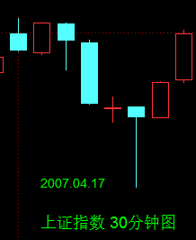
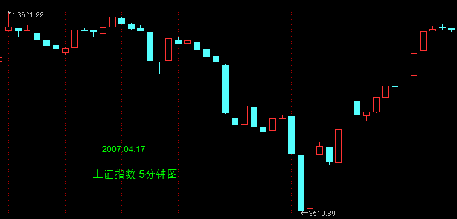
显然，对于上涨的情况来说，最强的就是收盘在第二中枢的上方，最弱的，就是出现第八根K线出现穿越单边区间的情况，最终收在第一个中枢的之下。然后根据收盘的位置，可以依次定出其他的强弱。【韶山映山红】两个维度的组合，完全分类一共有七种情况。1，五种收盘位置：第二个中枢之上、第二个中枢之间、两个中枢之间、第一个中枢之间、第一个中枢之下。2，后面两种收盘位置是否出现第八根K线穿越单边区间的情况。】
【韶山映山红】有两个中枢，也就是说，当天全天就是一个3K级别的趋势走势类型。★可以做个专题，以后研究。】
三、没有中枢
这是最强的单边走势，8根K线，没有相临3根是有重叠部分的，一旦出现这种情况，就是典型的强烈走势，一旦出现这种走势，该日K线都是具有重要意义的。【韶山映山红】什么重要意义？★以后研究。】一般来说，这种走势很不常见。例如，2.27那天就是。【韶山映山红】下面分别是通达信的历史数据恢复的30分钟图和网上流传的飞狐历史数据的30分钟图。】
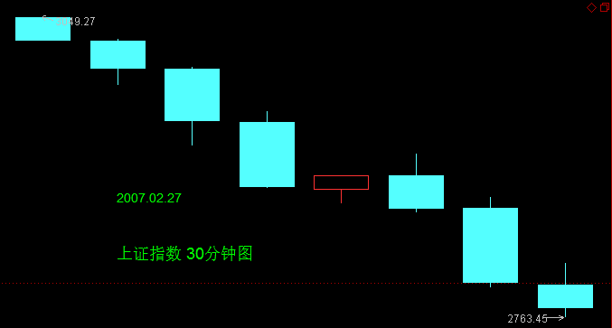
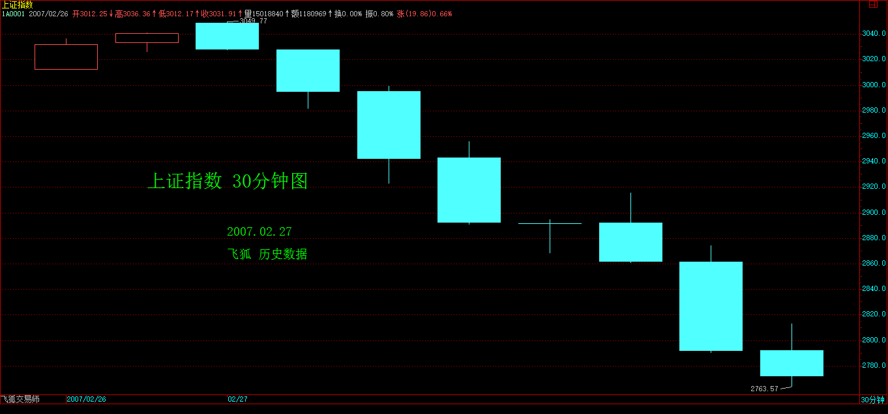
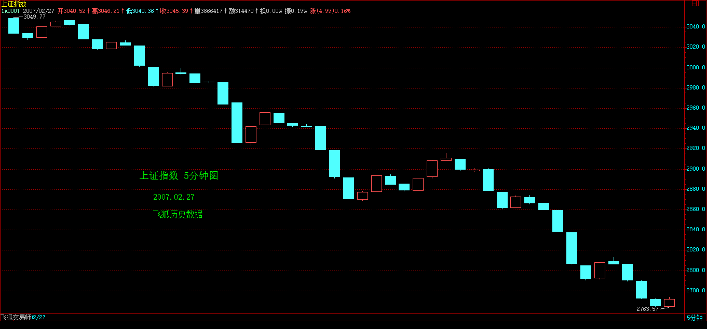
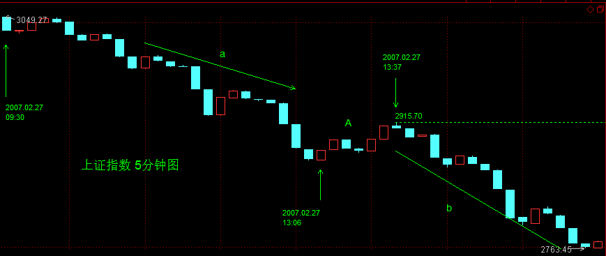
但别以为出现这种走势就一定会继续趋势，往往很多骗线就是故意用这类走势构成，特别是在大的日K线中枢中出现这种情况，更大可能是骗线，例如2.27。【韶山映山红】单边走势的情况下，大资金也没有条件做什么进出的大动作，所以可能是骗线洗盘。如何鉴别不是小转大的开始呢？以后研究。】
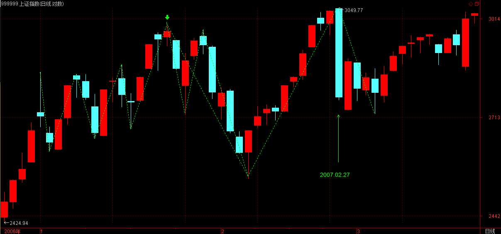
当然，如果是在一个第三类买卖点后出现这种走势，出现大级别的强势趋势的可能性就极大了。【韶山映山红】中枢阶段就是资金进进出出的阶段，所以第三类买卖点之后，想干什么的自己就可以动手了。】
【韶山映山红】从定义的完全分类来说，没有中枢的这种，除了单边走势之外，还有V型、W型、M型等小级别单边走势构成的当日的重叠走势。★以后研究。】
【韶山映山红】没有中枢，如果只是一个单边走势，就是3K级别的次级别。还有就是非3K中枢的3K级别走势。★可以做个专题，以后研究。】
时间紧，不能写太多，如何利用每天走势图进行辅助操作，在周五的下节课中说。【韶山映山红】2007-04-20周五的47课。】
今天是一个比较强的强平衡市，【韶山映山红】只有一个中枢，前三根30分钟K线出现当天低点，收在中枢区间，比较强平衡市。】
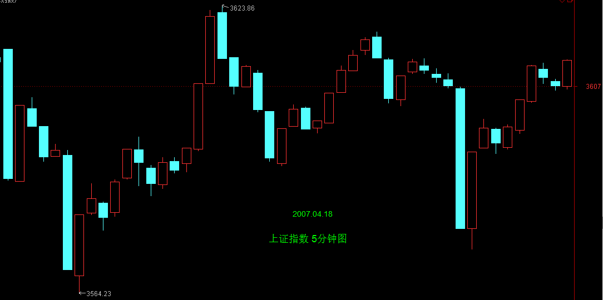
从纯技术的角度，一旦明天不能马上从这里往上突破，就至少会出现盘整级别延伸。【韶山映山红】“至少会出现盘整级别延伸”，不至少呢？下跌？★以后研究。】也就是说，明天如果不能出现这两天震荡所形成中枢的第三类买点，则有下破5天线的可能就加大了。【韶山映山红】实际上更多的不是“下破5天线”，而是5日线追上来了。这种5日线相交意味着什么？不强则弱？★以后研究。】
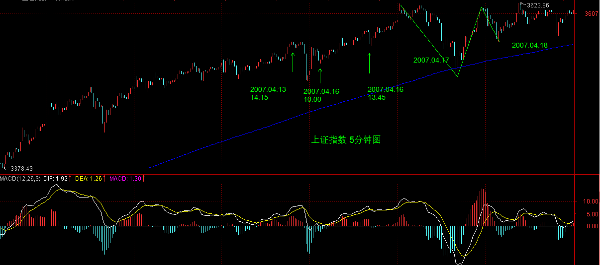
当然，如果明天很快就站在今天盘整区间上震荡上行，那就继续观察下一个中枢的上移。
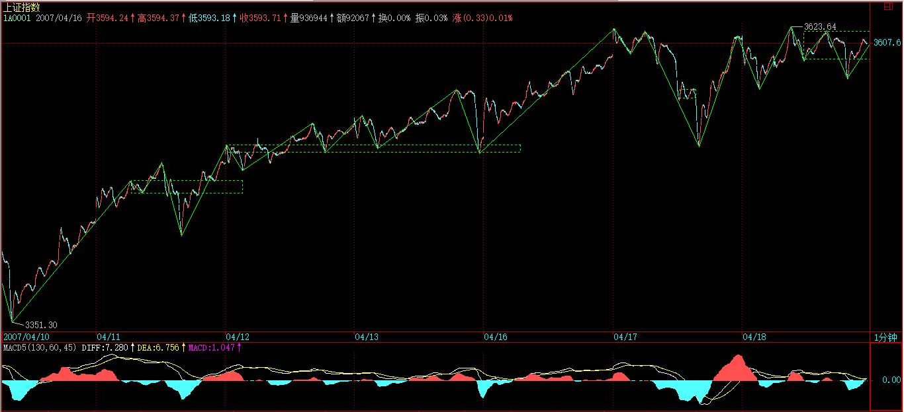
上面说的是纯短线技术方面的问题，基本面上，该出的消息被推迟，也是造成今天走势的直接原因，但这东西本周一定出来，但究竟有多大意义，估计只对基金等有影响，但这轮行情，基金丑态毕现。
今天最好玩的是事情就是那汉奸基金的破事被公开了，当然，这事情本ID早知道，而且本ID那14只股票里有两只999、343，那汉奸都有，所以当时999打回14元下时，本ID就说过，不想让汉奸以及老鼠仓出太高了。本ID以前说过，要实验一下阻击基金，探讨一下把基金给清盘的可能，本ID的话不是白说的。文章还在，有兴趣者可以去复习一下。
今天，本ID有点想八卦一下，因为今天000416第一个翻出两倍多，这是元旦后说的三只里的一只，调查一下，有谁能从3元拿到现在？
【韶山映山红】000416健特生物，生产脑白金。2008-01-06变更为华馨实业，2008-12-30变更为民生投资，2014-04-14变更为民生控股。】
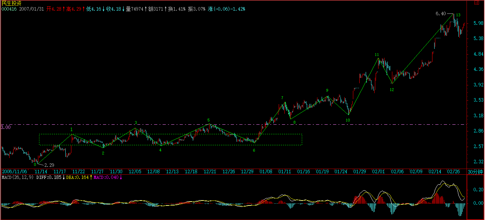
其他，000777等很快也两倍了，还有人拿着吗？
【韶山映山红】000777中核科技。】
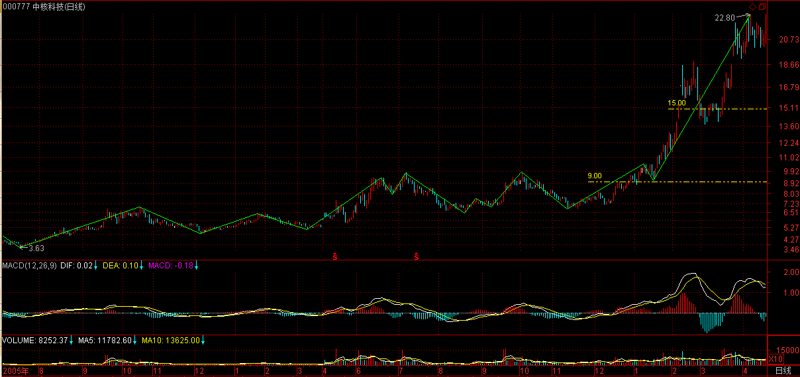
如果都没有，那么为什么？是不是操作上有些问题需要解决？
那14只个股，平均涨幅，从元旦开始，超过100%了，如果元旦到现在不超过100%的，必须彻底反省自己的操作。
2007-4-18 15:38
[匿名] 新年好 2007-04-18 15:41:14
向缠姐问好！缠姐辛苦了！
缠姐，今天大盘在14:16的时候为什么直接上去了呢？我在2点左右清仓了，本来还挺高兴看他下跌呢，想等着跌稳了补回来的。谁知道14:16的时候就直接上去了，搞得我不得不在14:40左右补仓。今天的下跌跟昨天几乎一样啊，怎么结果这么不一样？这个该如何判断啊？均线乖离什么的都说不通阿，昨天也一样啊。我尾盘的时候又满仓了，会不会有短期危险？明天到底会怎么样啊？
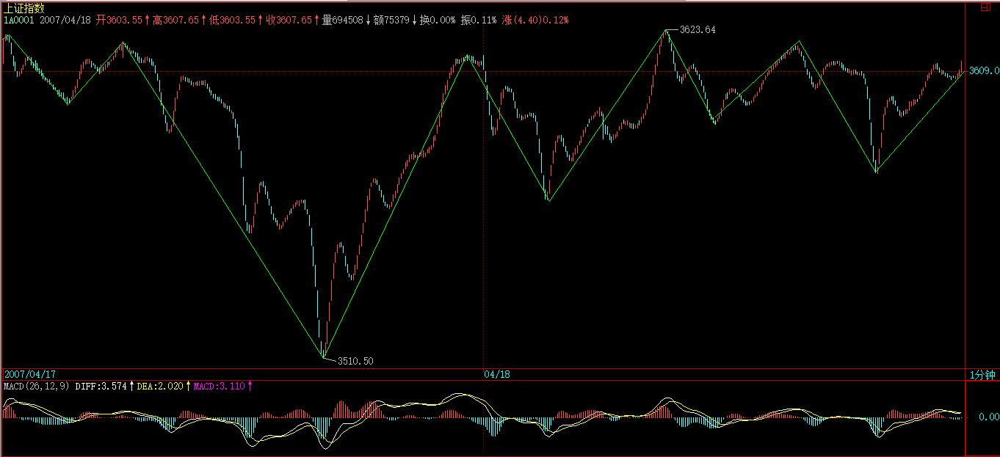
==
他为什么不能直接上去？例如ABC三段，前面两段都有了，C当然可以直接一段就上去了。【韶山映山红】我们可以分析各种背驰后的不同反应，没有特征信号的时候就不能预测一定会有什么样的走势。小级别的快速涨跌还需要盘口数据帮助判断。】
2007-4-18 15:49
[匿名] 袖手旁观 2007-04-18 15:47:58
缠mm，多日没来发言，提个疑问：
测度论应该是能解决力度测算，但是背驰必转折这一条不能由测度直接推导出来吧？
==
可以利用这个去证明。
【韶山映山红】缠论的数学基础。★可以做个专题，以后研究。】
１，测度论能解决力度测算。
２，不能由测度论直接推导出背驰必转折。
３，可以利用测度论去证明背驰必转折。】
2007-4-18 15:51
[匿名] 首钢股份 2007-04-18 15:42:26
本应于4月19日上午10时公布的GDP数据突然被延后至下午15时公布，而15时正是A股的闭市时间。据了解首季GDP数据可能超出此前预期，因此市场猜测这是为了避免引发更大幅度的上涨；同时市场人士也认为央行可能提早加息，以及加快推出新措施冷却股市。女王，我们小散应如何应对？看图操作，比如今天下午的大幅度回试，根本来不及啊！
==
来不及，就不参与，市场渠道当然不是完全公平的，这没办法。
只参与自己能把握的，请记住。
2007-4-18 15:53
[匿名] 可惜了 2007-04-18 15:51:02
入市较迟，拿的是９３８，可惜涨得不多，估计９３８是姐姐股票里涨得最少的
【韶山映山红】000938紫光股份。】
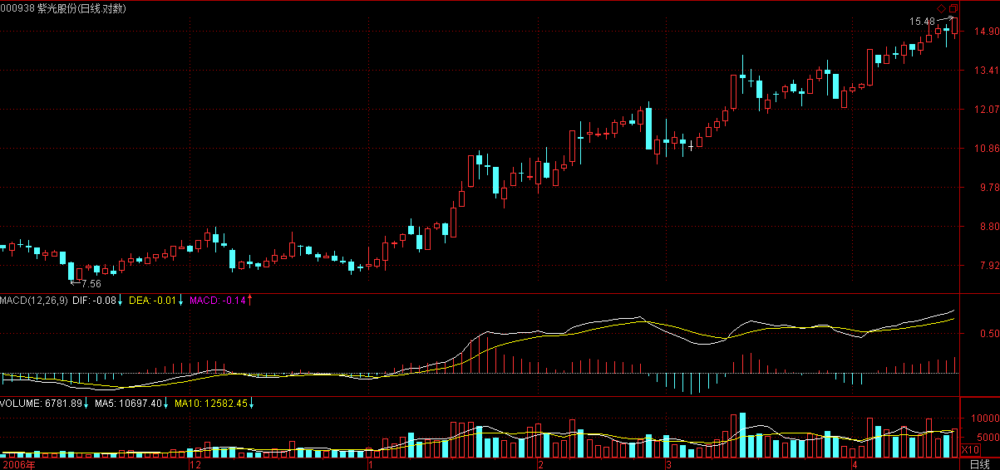
==
这是最晚说的，2月初，10元上下说的，到现在50%，是有点少，不过这股票从100元下来的，本ID只能说那么多了。【韶山映山红】从100元下来的，就还有回去的希望，可以做超长线的持有，机械操作法降低成本。后来最高到过139.05。】
2007-4-18 15:56
[匿名] 呼呼 2007-04-18 15:52:03
姐姐，不对吧，所有的都涨了100%了吗？938好象没有呢吧？
==
没有说都有，有3、4只没有吧，本ID说的是14只的平均。
2007-4-18 15:58
[匿名] 新浪网友 2007-04-18 15:58:26
美女姐姐,000778还没翻倍,可以等到那一天吗?
【韶山映山红】000778新兴铸管。】
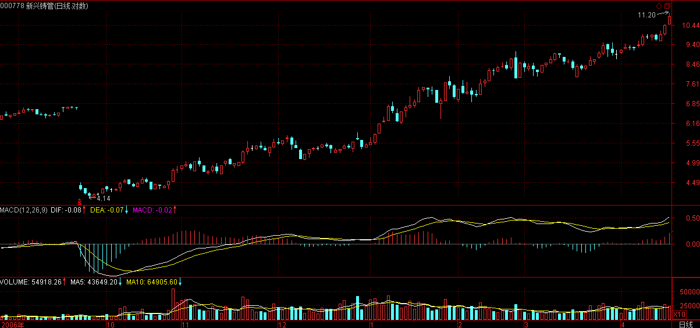
==
这翻倍了，第一批都是元旦前说的，如果你买的比较高，问题也不大，涨了那么多，你听过这股票的消息吗？知道他背后的股东背景吗？【韶山映山红】缠论基本面系统的实例。新兴系。可以做个专题。以后研究。】
2007-4-18 16:01
[匿名] 新年好 2007-04-18 15:41:14
向缠姐问好！缠姐辛苦了！
缠姐，今天大盘在14:16的时候为什么直接上去了呢？我在2点左右清仓了，本来还挺高兴看他下跌呢，想等着跌稳了补回来的。谁知道14:16的时候就直接上去了，搞得我不得不在14:40左右补仓。今天的下跌跟昨天几乎一样啊，怎么结果这么不一样？这个该如何判断啊？均线乖离什么的都说不通阿，昨天也一样啊。我尾盘的时候又满仓了，会不会有短期危险？明天到底会怎么样啊？
===
缠中说禅 2007-4-18 15:49
他为什么不能直接上去？例如ABC三段，前面两段都有了，C当然可以直接一段就上去了。
-------
[匿名] 新年好 2007-04-18 16:00:32
注意，以上三种情况中枢的位置不一定是前三根30分钟K线的重叠，可以是后面几根的。
请问缠姐，今天大盘应该属于哪种？一个中枢？那么是前三根K线的重叠吗？
还有上个问题看到你的回答了，但是你并没有给我讲讲怎么判断在14:16的时候应该回补啊？我还看不出来，如果出现这种情况我们应该怎么判断啊？
==
今天前三根有重叠，就是了。【韶山映山红】这三根K线只是重叠，实际上内部结构只有一下一上两个线段。】

下问题，从04.17 14:53开始看，用中枢震荡的力度比较。你看是今早的强还是下午的强？【韶山映山红】上午线段类盘整背驰之后开始中枢震荡，下午震荡减弱了，不创新高也不创新低。这种急跌急涨的掐尖很难。】
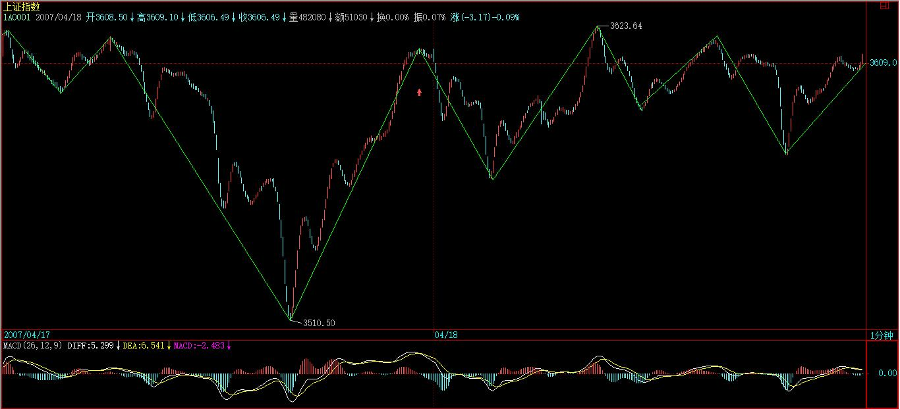
2007-4-18 16:04
[匿名] 机会在哪 2007-04-18 15:58:09
请问缠主,我现在50万入市短期还有没有机会赚钱?
==
这种心态本来就是错的，先把本ID关于股票资金的性质那几节看看，读读其中关于某人的悲惨故事。【韶山映山红】生手短线资金入市，无异于盲人骑瞎马夜半临深池。】
2007-4-18 16:06
[匿名] 新浪网友 2007-04-18 15:58:26
美女姐姐,000778还没翻倍,可以等到那一天吗?
==
缠中说禅 2007-04-18 16:01:15
这翻倍了，第一批都是元旦前说的，如果你买的比较高，问题也不大，涨了那么多，你听过这股票的消息吗？知道他背后的股东背景吗？
--------
[匿名] 大鱼小鱼落鱼盘 2007-04-18 16:06:28
缠主，现在还可以买000778吗？
==
本ID只建议在买点买股票。如果错过，就等下一个，绝对不能养成不在买点买股票的坏习惯。
2007-4-18 16:07
[匿名] 悟禅 2007-04-18 15:54:40
感觉老师真是用心良苦，太谢谢啦！汇报一下，自元旦至今，股票帐户（资金没进出过）的收益已超100％，自觉离老师的要求尚远，唯有继续努力。
==
靠的是你自己，本ID只是助缘。
2007-4-18 16:10
微微果二 2007-04-18 16:07:30
天啊，我得跳着留级了！元旦到现在我才刚刚解套赢利！半仓银行股，严重踏错节奏！股票个数分散，也属缠姐说的小资金的大忌！55555555555
缠姐，现在还来得及纠正吗？要不要现在把手头股票逐个清仓，然后单做一两个股？请缠姐指示纠正方法。
===
先学习，有时候等待也是一种修正，那课程学好了，什么时候都有机会。 【韶山映山红】清理门户也要选择卖点卖，所以“等待也是一种修正”。】
2007-4-18 16:11
[匿名] 缠心雕龙 2007-04-18 15:44:56
博主好。
向上的走势a+A+b+B+c，A、B是30f中枢，如果c是一个强劲的1f走势，且已经有c对b不背驰了（但B没有出现严格意义上的三买），此时能认为B完成了吗？
==
完成是一种形态，和幅度无关。【韶山映山红】这一句应该是针对c是一个强劲的1f走势来说的。完成是一种形态，要有次级别符合区间套的c才是。】
这种情况，很正常，次级别总是从次次级别生长出来的，所以前面的课程里就提到，【韶山映山红】36课。】次次级别回试构成的是次级别的第三类买卖，【韶山映山红】本级别中枢，次次级别回试，构成次级别第三类买卖点。这里说的还是返回本级别中枢，而不是次级别中枢。】比该级别的要早点，实际操作上，也可以利用这个先操作，这没有任何问题。【韶山映山红】B没有完成，但是可以做强三买分析。】
后续如有c内小级别背驰导致的30f级别转折C，从同级分解观点看，能否认为c上的小级别背驰点就是分解点，而a+A+b+B+c是一完整趋势？
==
这说过了，就是这样分解的。【韶山映山红】同级别分解（a+A+b+B+c）+C，非同级别分解（a+A+b）+（B+c+C）。】
2007-4-18 16:20
[匿名] 窗外 2007-04-18 16:18:42
缠mm，今天的教程里，中枢就是8根k线中，第1次出现的3根重叠，是吗？
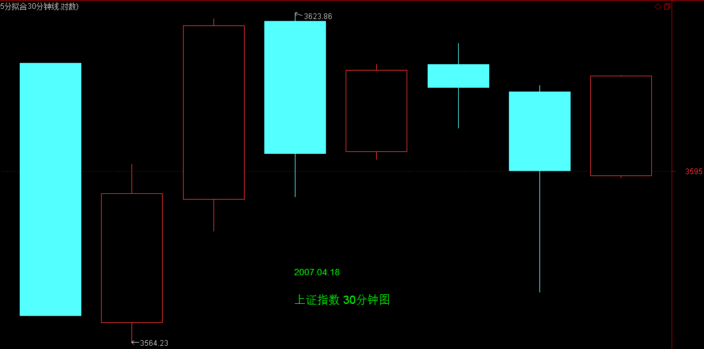
==
是，但这种只针对每天的走势图。【韶山映山红】简单的用3根K线重叠来判断隐含的低级别中枢信息，可靠性不高，还需要更多的细节。】
2007-4-18 16:21
[匿名] longs 2007-04-18 15:55:01
缠MM,你觉得现在基金没有有越来越被边缘化的趋势?
==
三十年河东，三十年河西，这市场是开放的，只要他们能改过自新，还是好孩子。
2007-4-18 16:23
[匿名] 朗月无花 2007-04-18 16:07:44
对于不能保证每天看盘的人如何操作才是最好的？？？？
==
至少看30分钟级别操作。
2007-4-18 16:24
[匿名] II 2007-04-18 16:09:26
谢谢缠MM。。又在给我们送钱啊！！！我要集中火力。938！
==
本ID从来不让人在非买点买股票，任何好股票也都需要好买点。
2007-4-18 16:25
[匿名] 三藏 2007-04-18 16:23:08
老大，深证5分钟今天的盘背给解说下
为什么撑到第三个才跌
我是第二个红柱子出去的
另外，跌完什么时候补仓没看出来
老大务必给说下！！！！！
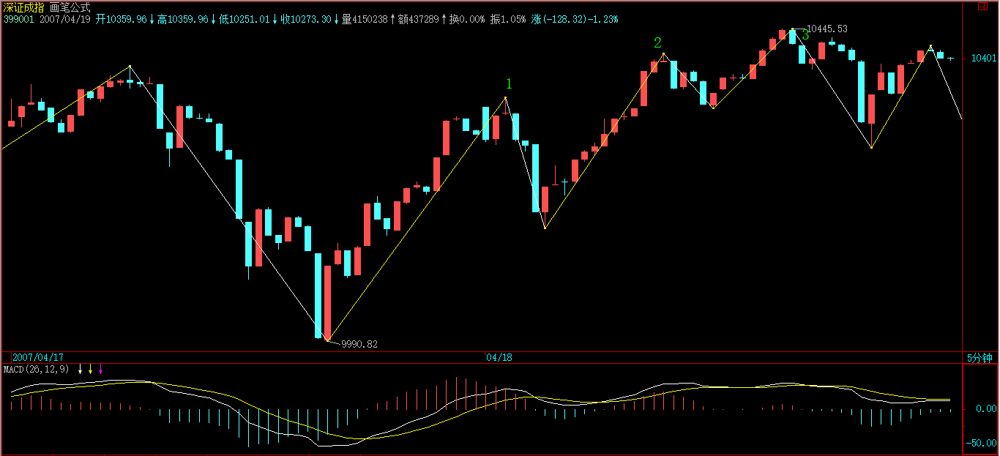
==
你应该去看看1分钟图就明白了。【韶山映山红】0-1和2-3盘整背驰，3-4跌破前高1形成中枢1-2-3-4，4-5离开中枢,对2-3盘整背驰，对0-1形成a+A+b的盘整背驰，导致5-6的下跌。3-4没有跌更多，是因为内部线段类盘整背驰，可以把握。5-6底部是小转大，就难了。】
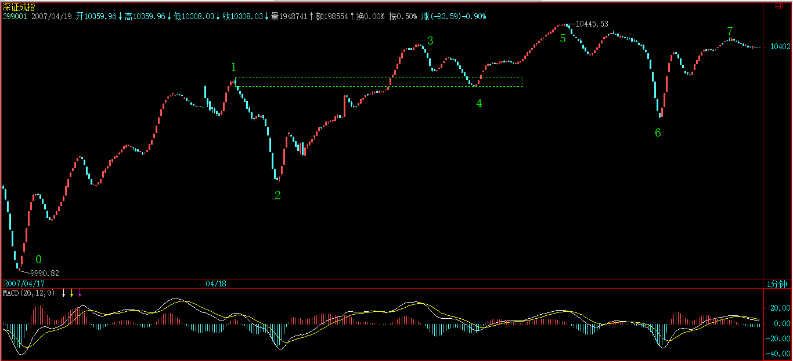
2007-4-18 16:27
一粒米 2007-04-18 16:09:22
缠MM好!问个问题：我们小散每次有利润后将它变为0成本的股票好，还是变成现金再搞第二个股票？我发现几个月前的股票留下来的话利润自动升值了。且现在买不到以前的平货了。但股票多了，管理起来又很烦。你有好建议吗？(我的资金才3W)。谢谢! 【韶山映山红】换股的问题在于，见利就走，不断的赚小钱，却失去了跟随大势上涨的大钱，还因为都不在底部了，使得换股越来越难。】
==
你可以选好几只节奏有错位的股票，当成股票池，任何不断反复操作这些股票，在这些股票中不断根据买卖点买卖换股，每次只操作一只，最多两只。【韶山映山红】这个不断二字很重要。换股不空仓，就能保证跟随大势上涨而始终在车上，还有可能跑得比大势更快更高。】
【韶山映山红】“节奏有错位”，除了选择不同板块之外，还有什么方法？关于股票池，可以做个专题。以后研究。】
2007-4-18 16:29
【网文】远看小问题，近看大问题啊！
在缠论原文里，有这么一个提问：
缠MM好!问个问题：我们小散每次有利润后将它变为0成本的股票好，还是变成现金再搞第二个股票？我发现几个月前的股票留下来的话利润自动升值了。且现在买不到以前的平货了。但股票多了，管理起来又很烦。你有好建议吗？(我的资金才3W)。谢谢!
很多人都会有同感。
比如，我们操作了一个三买，次级别盘背之后，退出，不参与后面的震荡，继续去找另一个三买的机会。
符合规则，执行纪律，还不错吧？
很多人都是这样，不断的寻找三买的机会，像跳跳糖，很爽的样子。
这样炒股的问题在于，见利就走，不断的赚小钱，却失去了跟随大势上涨的大钱。
比如原文的这个提问，我们看一眼当时的上证指数，事后诸葛亮地说，在那两年的时间里，做三买的人，辛辛苦苦，赚的钱，未必能超过傻傻的持仓不动。
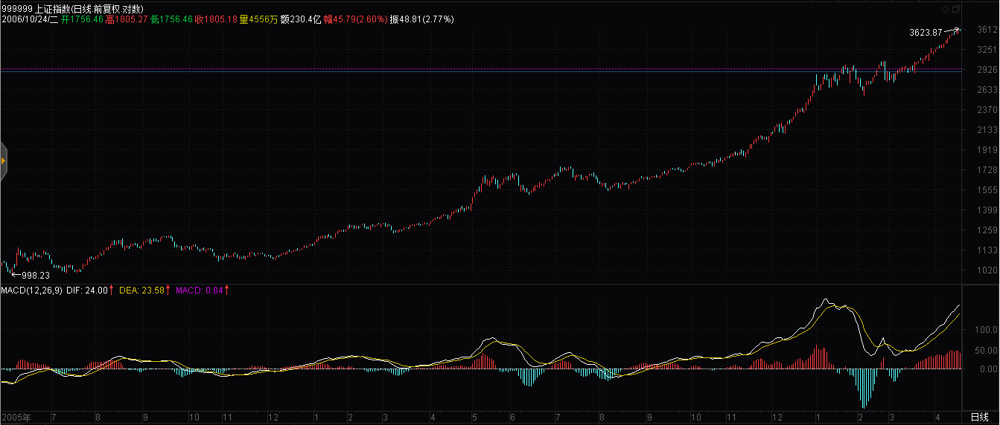
所以这个人产生了困惑：几个月前的股票留下来的话，利润自动升值了，根本不需要辛辛苦苦啊。
仔细解读原文才发现，他还没有长期持股操作的打算，他说的，是赚取的利润如何处理。
所以第一个方案是，每次有利润后将它变为0成本的股票，也就是说，只抽出本金的部分，多赚的利润以股票的形式存在那里，等着自动升值。本金继续去炒下一个票。
这个方案的问题是，“股票多了，管理起来又很烦”。毕竟，每次抛弃股票之后，都要留下一个娃儿。
对应的第二个方案，是把赚到的利润变成现金，和本金一起，去搞第二个股票。光棍一条，一个人吃饱，全家都不饿。利利索索。
这个方案的问题是，“买不到以前的平货了”。水涨船高，那些漂亮的三买，都不是底部了，也许是第二个中枢，第三个中枢，做惯了花心大萝卜，才知道，妖艳的货色，贵啊。
原来看这个提问，没有细想。今天再一看，解读出这么一大堆来。
讨论，很多时候都有这样的问题，对方已经说得很清楚了，我们浮光掠影的一瞥，并没有接收到多少信息。
静心，耐心，认真……要怎么做，才能更好呢？
写这么一大堆，当然不是为了跑来做检讨的。
只不过，今天已经凑够字数了，咱们明天再聊。
您也看看这个问题，有什么样的解读。
不能总是您清清凉凉的吃瓜，我满头大汗的耍猴，是吧。
】
【网文】缠论操作的最新发现
昨天说到了原文问答里的一个小问题。
问题不是重点，重点在于，看问题，不认真，看得到答案，也就不一样了。
有什么不一样呢？
先来看看缠师的回答：
你可以选好几只节奏有错位的股票，当成股票池，任何不断反复操作这些股票，在这些股票中不断根据买卖点买卖换股，每次只操作一只，最多两只。
原来看这段文字，首先看到的就是，不断的换股操作，这样能提高资金的利用率，小散的最爱啊。
其次，要有一个股票池，方便换股。这次就是要做股票池的专题学习，才找到这里来的。
股票池，不是重点。
我们都知道，第三类买卖点嘛，似乎比背驰判断简单，依照形态，去海选就是了，也不是什么不可能完成的任务。
更何况，我前面的文章还说了，软件可以做形态匹配选股，小事一桩嘛。
等一下，等一下。股票池，不是重点？
咱们要做股票池的专题学习啊，怎么可以不是重点？说啥也要搞成重点啊！
回到昨天的那个问题。
小问题是，赚到的利润怎么处理。
大问题是，股票都上涨了，涨了那么多，我们只是辛辛苦苦赚了一点短线的钱，薅了一堆的羊毛，放跑了那么多的喜羊羊啊。
缠师才不关心羊毛呢，她教给我们的，是薅羊毛过瘾的同时，抓住喜羊羊！
这段原文解读的核心，简单说，就在两个字：不断。
复杂说，就是一句话：在这些股票中不断根据买卖点买卖换股。
什么叫不断？
换股不空仓。
不空仓，就能保证跟随大势上涨，而始终在车上。
换股，不只是为了薅羊毛过瘾，更多的，是为了跑得比大势更快，也就更高。
打短线，做长线，是一家人，而不是对立的两个门派。
由此想到，咱们这些笨蛋，总是这一撮，那一堆，断章取义，一个缠门，搞出无数的派别来。可叹，可笑。
好啦。我写完了。虚张声势，草草收尾，不知道说明白了没有。
反正，不想再掰碎了细细的说，只说这些啦，说多了心疼。
】
[匿名] 后知后觉 2007-04-18 16:22:21
禅主我已经复制了12遍了：
1，禅主说的基金，看到了。另外不知道QFII想干什么？？或许另有它图，用香港的金融期货来对冲做空大陆股市？按理说，他们不至于目前这么弱智吧？
==
为什么外国人就不可以弱智？谁都有干错事情的时候。当然，有很多外国进来的弄得很好，只是不在水面上。
2，请禅主帮忙：002128，按照我的方法判断，进了，也有同学跟进，可尾盘下的很凶，估计套了他们2％了，我认为那是它短线的极限低点了。【韶山映山红】此人前面的问答里说过：“大盘某个阶段，首日上市的新股，还是有特殊的地方的，比如招商轮船，也是在大家认为点位比较高的时候。我发现，首日上市新股，看30分钟的K线，如果后三条K线的价位在第一个K线高位的1/3以上位置，而第一个30分钟换手很高，这样的个股都有机会，比如 招商轮船，金陵饭店，ST仁和也是这样的情况，我说的这个判断方法也在群内告诉大家了，昨天也有人跟我一起在低位买了金陵饭店，今天上午我也补了很多。”2007-04-09 16:02:32 】
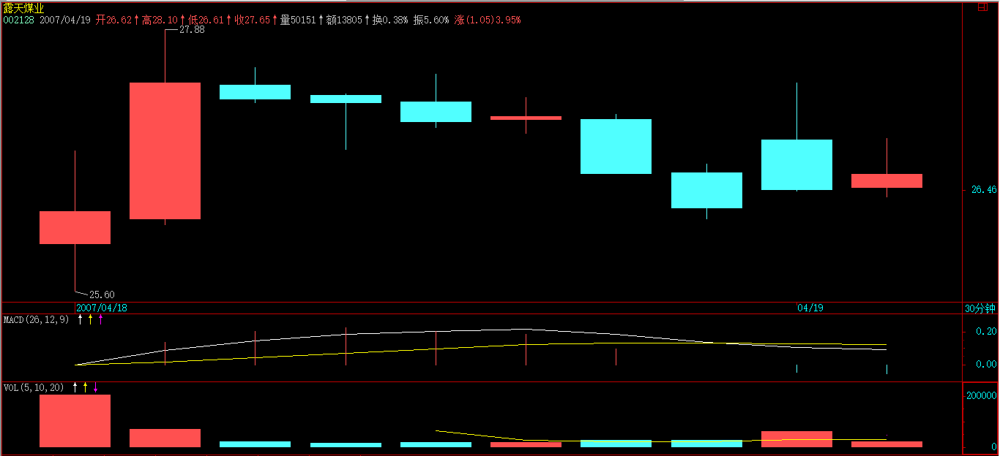
在群里我已经公开道歉了，或许看走眼了。责任重大，请禅主就这支新股给予必要的指导！
谢了！
==
看1分钟图，上面走得很标准。【韶山映山红】002128露天煤业，2017-04-18上市。上市第一天的股票怎么分析见顶？★★以后研究。】
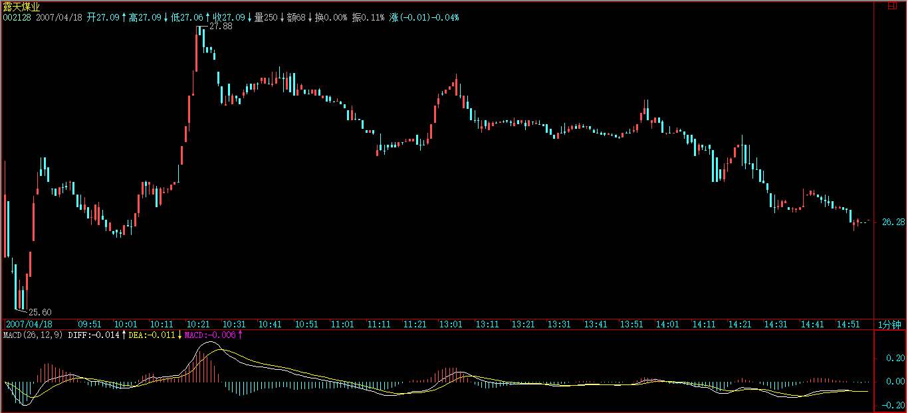
2007-4-18 16:34
[匿名] 新浪网友 2007-04-18 15:58:26
美女姐姐,000778还没翻倍,可以等到那一天吗?
==
缠中说禅 2007-04-18 16:01:15
这翻倍了，第一批都是元旦前说的，如果你买的比较高，问题也不大，涨了那么多，你听过这股票的消息吗？知道他背后的股东背景吗？
+++++++++++++++++++
[匿名] 白玉兰 2007-04-18 16:04:22
那915很多机构跳出来推荐,是否对操作和走势有影响?
+++++++++++++++++++
[匿名] 白玉兰 2007-04-18 16:17:39
妹妹回答一下我的问题啊.
==
那也很正常，市场是公开的，本ID不能说本ID的股票就不允许任何人说，爱说什么都可以，关键是公司本身。
2007-4-18 16:36
[匿名] 新年好 2007-04-18 16:00:32
注意，以上三种情况中枢的位置不一定是前三根30分钟K线的重叠，可以是后面几根的。
-------
请问缠姐，今天大盘应该属于哪种？一个中枢？那么是前三根K线的重叠吗？
还有上个问题看到你的回答了，但是你并没有给我讲讲怎么判断在14:16的时候应该回补啊？我还看不出来，如果出现这种情况我们应该怎么判断啊？
==
缠中说禅 2007-04-18 16:04:16
今天前三根有重叠，就是了。
下问题，从04.17 14:53开始看，用中枢震荡的力度比较。你看是今早的强还是下午的强？
-------------
[匿名] 小八 2007-04-18 16:36:25
缠姐老大，我怎么觉得是下午的看ｍａｃｄ的要强一点呢？１７日的那段离开力度反倒弱一些呢。而下午的柱子是大力放长了。感觉是力度大了。根据中枢震荡力度比较，怎么觉得今天该是更往下一些呢？请缠姐明示，小弟看了很久都还不能明白。
==
17 14:53到18 10:01这段，和18 13:35到18 14:16，两段谁强？绿柱子面积谁大？显然是前面的大，前面的强。
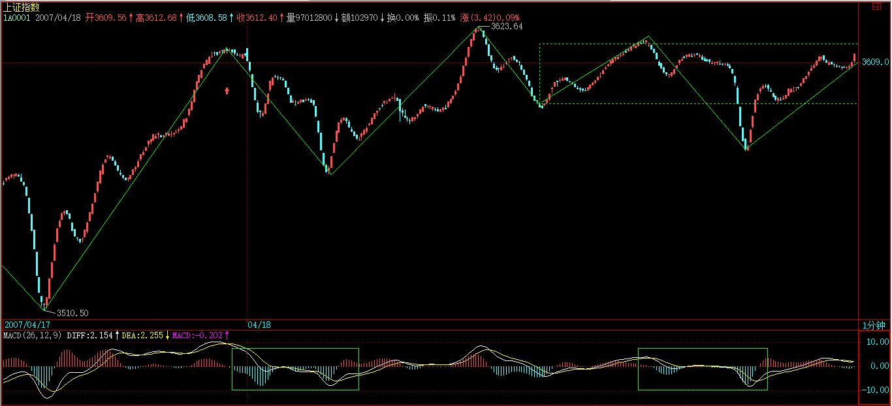
也就是后面这中枢震荡，向下的力度没有前面的强，那前面的都能拉回中枢，为什么后面的不可以？这在关于中枢震荡的课程里都有，请再次研究一下。
2007-4-18 16:41
[匿名] 新浪网友 2007-04-18 16:38:06
后知后觉，姐姐终于回答你了,可怜的人,可能是你平日里太嚣张了，姐姐不喜欢你的缘故吧．
==
不是这个原因，只是本ID有其他问题还没回答完。问题太多，本ID不可能每一个都回答到，抱歉。
2007-4-18 16:43
各位，对不起了，必须马上出门，要去一个比较远的地方，再不走，就走不动，塞车。
先下，明天见。
2007-4-18 16:49
(2007-04-19 15:34:58)
64
孟懿子问孝。 子曰：“无违”。 樊迟御，子告之曰：“孟孙问孝於我，我对曰，“无违。”” 樊迟曰：“何谓也？” 子曰：“生，事之以礼；死，葬之以礼，祭之以礼。”
杨伯峻：孟懿子向孔子问孝道。孔子说：“不要违背礼节。”不久，樊迟替孔子赶车，孔子便告诉他说：“孟孙向我问孝道，我答覆说，不要违背礼节。” 樊迟道：“这是什么意思？”孔子道：“父母活着，依规定的礼节侍奉他们；死了，依规定的礼节埋葬他们，祭祀他们。”
钱穆：孟懿子向：“怎么是孝道？”先生说：“不要违逆了。”一日，樊迟为先生御车，先生告诉他说：“孟孙问我孝道，我答他不要违逆了。” 樊迟说：“这是什么意思呀？”先生说：“父母生时，当以礼侍奉；死了，以礼葬，以礼祭。”
李泽厚：孟懿子问如何是孝？孔子回答说：“不要违背。”樊迟替孔子赶车，孔子对他说：“孟懿子问我如何是孝，我回答说不要违背。” 樊迟问道：“这是什么意思？”孔子道：“父母亲活着，按照礼制来事奉；死了，依照礼制来安葬，依照礼制来祭祀。”
详解：
“孝”，对于孔子、儒家来说，只是一个很日常的概念。在孔子那里，绝对没有后世被改装的所谓“以孝治天下”的想法。孟懿子，鲁大夫，其父要求其学礼于孔子，也算是孔子早期弟子之一，但此人对孔子有点像犹大之于耶稣，所以后来一般都不把他当成孔子的弟子。
“违”，本义“离开”；“无违”，就是不要离开当下社会的现实，这包括了文化、经济等。后来有些人把“无违”当成不要违背父母，这显然是不对的，于实际情况不合，难道杀人放火之辈就没有儿女？难道他们的儿女也要跟着杀人放火才是“无违”？
而且，孔子在后面也给出了“无违”的解释“生，事之以礼；死，葬之以礼，祭之以礼”。这里，孔子强调的是“礼”，由于“礼”在《论语》中被反复提到，很多相关问题必须在后面逐步解决，但这里必须首先知道，“礼”对于孔子来说是当下的，没有超越现实永恒不变的“礼”。
“礼”，最初与“祭神求福”的“礼仪”相关，进而引申到社会生活中各种行为上某种约定俗成的规范，而这，必然与当下社会当下本身相关。而“孝”本身，也是一种约定俗成的规范，同样具有当下性。因此，在孔子看来，所谓的“孝“，是在社会行为规范的动态系统中一个当下的呈现。没有任何先验的规范，使得“孝”有绝对不可更改的标准。如果你父母是汉奸、东条英机，大义灭亲就是最大的“孝”，这才是真正的“无违”。
缠中说禅白话直译
孟懿子问孝。子曰：“无违”。樊迟御，子告之曰：“孟孙问孝於我，我对曰，”无违。””樊迟曰：“何谓也？”子曰：“生，事之以礼；死，葬之以礼，祭之以礼。”
孟懿子问孝。孔子说：“不要离开。”樊迟替孔子赶车，孔子对他说：“孟孙向我问孝，我回答说：“不要离开”。” 樊迟说：“什么意思？”孔子道：“父母在世，用社会当下约定俗成的规范去侍奉他们；父母去世，用社会当下约定俗成的规范去安葬、祭祀他们。”
子游问孝。 子曰：“今之孝者，是谓能养。至於犬马，皆能有养；不敬，何以别乎。”
杨伯峻：子游问孝道。孔子说：“现在的所谓孝，就是说能够养活爹娘便行了。至于狗马都能够得到饲养；若不存心严肃地孝顺父母，那养活爹娘和饲养狗马怎么去分别呢？”
钱穆：子游问：“怎么是孝道？”先生说：“现在人只把能养父母便算孝子。就是犬马，一样能有人养着。没有对父母一片敬心，又在何处作分别呀！”
李泽厚：子游问如何是孝？孔子说：“今天所谓孝只讲能够养活父母。人也一样养活狗、马。不尊敬，那有什么区别？”
详解：
本章字面意思很清楚，但与上章视角不同。
上章是站在整体的社会结构角度审视“孝”作为一种特殊的社会规范的当下性。而本章，是站在具体个体的角度，审视“孝”作为一个具体的个体行为的当下性。
所谓“在貌为恭,在心为敬”，孔子强调“敬”，而不是表面上的“养”。心，惟在当下，一心不敬，则不过将父母当成犬马，即使能养之，又有何益？
缠中说禅白话直译
子游问孝。子曰：“今之孝者，是谓能养。至於犬马，皆能有养；不敬，何以别乎。”
子游问孝。孔子说：“能养父母就被认为是现在的孝了。甚至狗和马，都会有人养；如果内心不敬，又用什么来区别这两者？”
（待续）
今天走势很正常，技术上的道理，昨天已经说了，就算搞不清楚昨天说的，5日线下破以及04.19 11:08昨天中枢的第三类卖点，都足以让你有足够时间去反应。

牛市就是快跌慢涨，卖了就要找机会买回来，否则，牛市与你无关。
基本面上，数据最终如何，问题都不大，就算是加息，也没什么大不了的。
今天10:30到13:30，三K线形成3520上下的中枢，【韶山映山红】弱平衡市。当天前三根K线出现全天高点，收于中枢之下。】
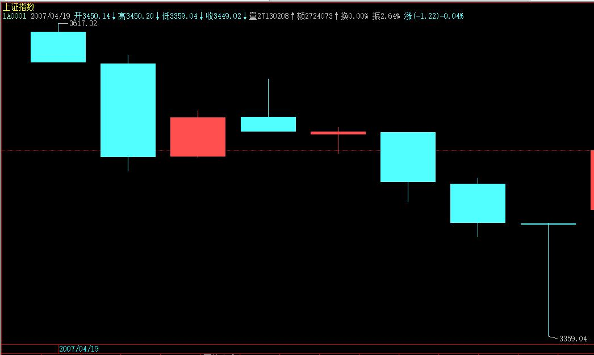
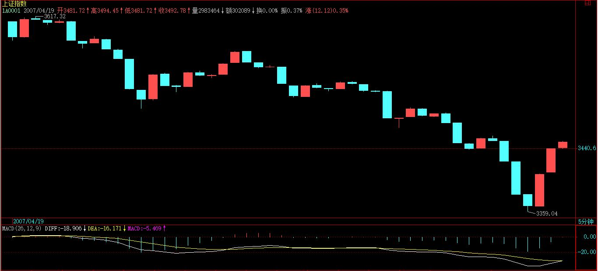
短线就看这能否重新上穿，一旦上穿站稳，就继续原来走势。当然，站在本ID的角度，完成深圳1万，上海3500的第一目标，是希望在这里出现一个整固过程，这在前面也说过，这样才会比较稳健。
当然，目前资金流入太快，本ID这类稳健的想法，不一定能得到市场的认可，本ID只看市场的反应，市场想干什么都可以。
个股方面，补涨的、故意玩坏业绩的，都会继续表现。
继续八卦一下，今天这样的走势，可以把人分为几类：
一、吓傻了。
二、被夹空在说，我都说要调整的，其实从3000点开始就说了，今天终于可以自渎一下。
三、实干型，一看早上开盘没有形成第三类买点可能，就先走，【韶山映山红】线段类盘整背驰的高点开始中枢震荡，线段反弹高点不断下降，“没有形成第三类买点可能”？也没有相应的卖点出现。怎么判断？以后研究。】最迟在04.19 11:08懂得把有卖点的股票走掉的，【韶山映山红】盘整三卖点。】然后等待买点回补的。
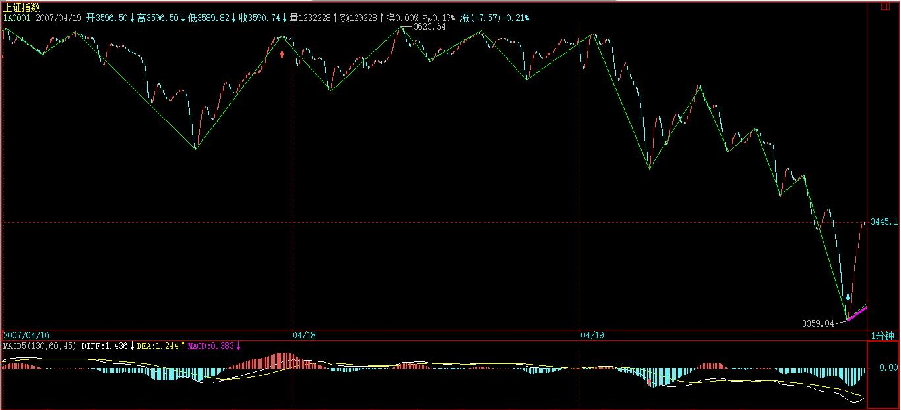
四、激进型，在大跌中还敢于对有买点的股票发动进攻的。真正做到只关心买卖点，有卖点就卖，有买点就买，不会被大盘的波动而影响。
请问，你属于哪一种？
2007-4-19 15:37
[匿名] 新浪网友 2007-04-19 15:39:58
缠主好:今日走势如缠主所料,真是神.
不过今天我们的中长线品种002051(中工国际)没有出,18元左右分批进的,打算持有到50元,不知道缠主对这个股票有何指教?卑下洗耳恭听,万分感激.
==
就算长线的，也应该学习在大点的卖点进行卖出，买点再回补的操作，这样能把成本降低，而且可以增强持有的灵活性。
当然，这需要一定的技术支持，所以要学习。
2007-4-19 15:49
[匿名] dliss 2007-04-19 15:44:11
我哪一种也不是
把钱都买了股票
然后，开始欣赏跳水表演
实在没着了，傻大胆呵呵，下午13:30就把上午出的股票回补了
呵呵，本周成果损失殆尽：〉比上周五的只多了200块钱
：〉：〉
==
继续学习，必须要等待真正背驰才能回补，13:30有背驰吗？
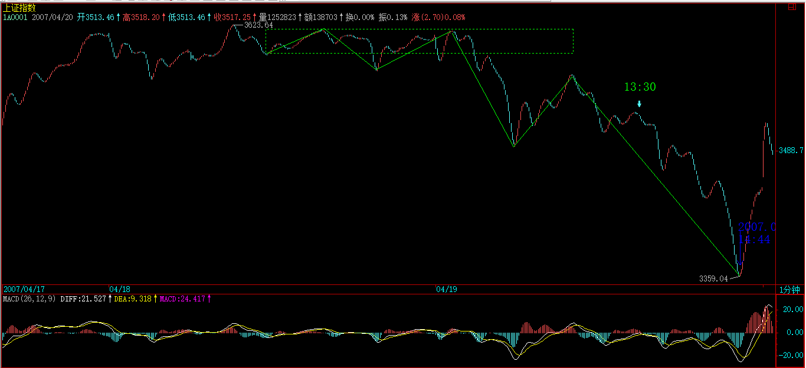
当然，个股是有差异的。
2007-4-19 15:52
[匿名] 新5309年好 2007-04-19 15:50:20
激进型，在大跌中还敢于对有买点的股票发动进攻的。真正做到只关心买卖点，有卖点就卖，有买点就买，不会被大盘的波动而影响。
-----
我属于这种，看来太激进了，我是上午10点左右把能清的清掉了，可惜就是补得太早，看着几次1分钟都有背驰的样子，就进了，忘了看5分钟还在下跌中。以后一定要改掉这个毛病。不过最失败的是昨天尾盘满仓，如果不是尾盘满仓，今天会更好点。
==
激进是需要技术支持的，技术达不到，可以采取相对保守的作法，例如，跌破5日线，除非出现特别明显的较大级别背驰，否则还是持币等待。就算重新上涨，还有第二、三类买点可以介入。
2007-4-19 15:55
[匿名] 墨香小老虎 2007-04-19 15:53:52
博主：我短差没有做好。下午没有补在最低点。利润少了1万元。
==
技术不好的，宁愿卖早买晚。
2007-4-19 15:57
[匿名] 巴索林 2007-04-19 15:56:46
俺是第4种，只是对买卖点把握还是不太准，比如下午就分批进了几次，再次严重检讨，好好学习
==
必须等待真正的背驰，而且这种走势，从心理上也知道肯定要跌到2点半以后。这是一个经验问题。就像跳水经常在14:45分一样。【韶山映山红】开盘第一个小时就大跌，第二个小时回涨一半，下午还会继续跌。★】
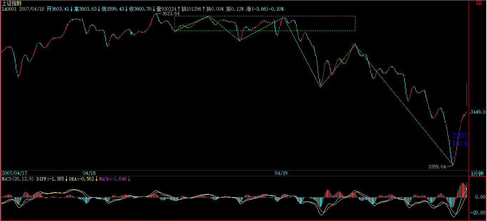
2007-4-19 15:59
[匿名] 飞 2007-04-19 15:59:12
博主,有些股票本来买点出来了可大盘一跌也跟着再往下跌啊!大盘的走势是不是很重要?会影响个股的走势吗?
==
大盘不好，一定要等待大一点级别的买点，或者在尾盘出现的买点。否则不一定能逃过T+1的限制。
2007-4-19 16:00
一粒米 2007-04-19 15:59:25
缠MM好!看来我的心态还是不稳，今天居然没有反应，没有操作。把这两周的利润洗掉了62%。严重反思中。
==
自己没把握时，可以半仓，这样肯定不会错。
2007-4-19 16:02
[匿名] 新浪网友 2007-04-19 16:00:53
我是激进型，上午走了后在下午13.47加了隧道股份，可惜又新低了。呵呵呵呵呵呵呵呵 【韶山映山红】600820 隧道股份 。】
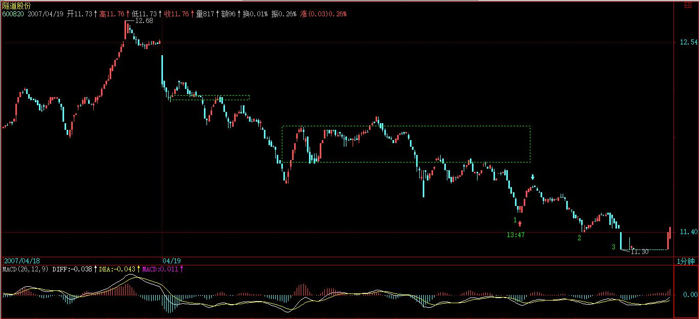
==
要学会等待真正的背驰。
2007-4-19 16:03
对不起，16:30分有一个生意要谈，晚上9点再上来。
先下，再见。
2007-4-19 16:04
各位晚上好
2007-4-19 21:15
两只老虎 2007-04-19 16:01:10
神仙姐姐，我一遇到大跌怎么就这么麻木呢？我总是习惯先买后卖，对先卖后买极其迟钝。
==
这是出学者普遍的毛病，买点卖点是平等的。【韶山映山红】买点卖点是平等的，必须学会做空。】
2007-4-19 21:21
[匿名] 好人好报 2007-04-19 16:26:45
学习缠妹妹理论,觉得在大的买点买比较安全<30分钟>在卖点上以5分钟的卖点比较好.如果在大的下跌趋势中如果也按5分钟,一分钟买点买难免要受当日不能卖的局限性,不知缠MM我说的对与否?
==
对T+1的局限是必须考虑的。
但一般来说，特别巨大的下跌，如果真有5分钟的背驰，其反弹力度已经足够短线。当然，这是对小资金来说的。【韶山映山红】线段级别的底背驰就可以做。】
2007-4-19 21:28
[匿名] 大妈妈 2007-04-19 16:30:56
缠美眉，今天大盘三十分钟的走势只有一个中枢，收盘在中枢之下，对照你昨天的课程应该是一个转折平衡市，是意味下跌转上涨还是从前阵子的上涨转折为下跌的趋势。如果是下跌形成趋势应该还有一个30分钟的下跌中枢吧。这样分析对吗？请指点！！！
==
属于比较弱的平衡市，全天高点在前三就出现了。【韶山映山红】一个Ｋ线重叠中枢。收于中枢下。】
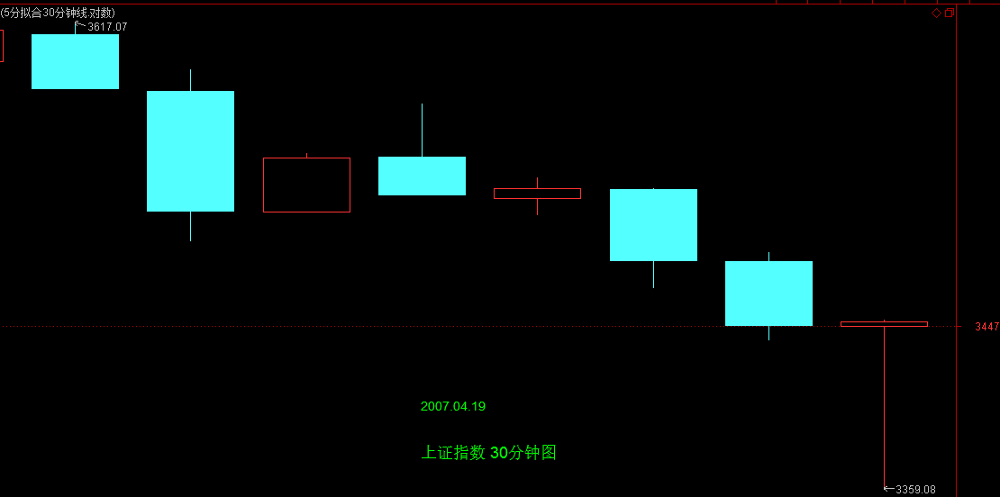
2007-4-19 21:30
[匿名] 新浪网友 2007-04-19 20:29:57
今天上午看600855走势很强，就进了，没想到下午跌破5日线了， 请教缠姐是否会继续下调？【韶山映山红】600855航天长峰。上午实际上是中枢震荡延伸。】
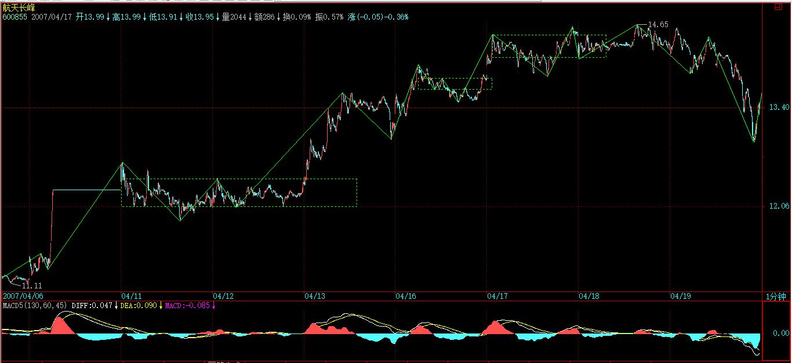
==
这问题说过多次，除非是有较大级别的买点，否则，买股票都应该在下午，特别在走势不明朗的时候。而且这股票，早上也没有任何买点，所以必须要好好总结。
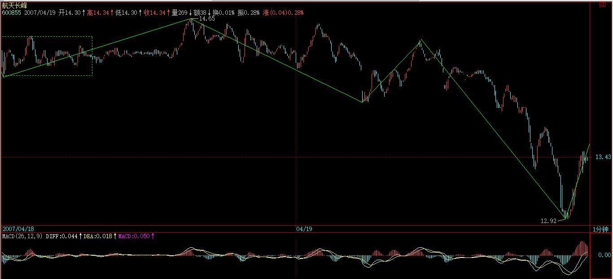
2007-4-19 21:44
[匿名] 新浪网友 2007-04-19 16:00:53
我是激进型，上午走了后在下午13.47加了隧道股份，可惜又新低了。呵呵呵呵呵呵呵呵
==
缠中说禅 2007-04-19 16:03:02
要学会等待真正的背驰。
-------------
[匿名] 新浪网友 2007-04-19 21:37:33
谢谢，缠妹妹，我当时认为13:47是一分钟的背驰，我判断有误？
【韶山映山红】600820 隧道股份 。】
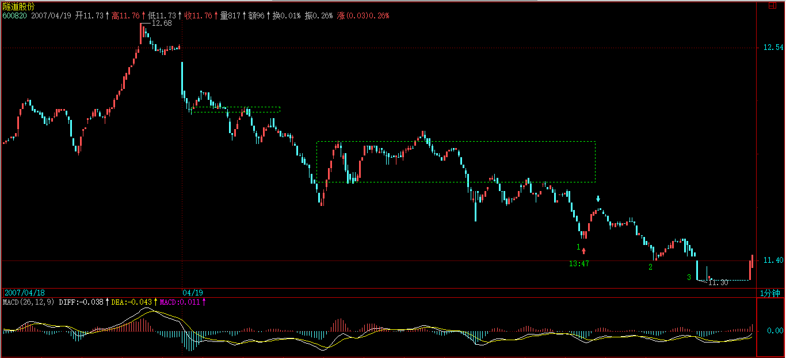
==
还要学习，这种走势，后面是一个标准的小的第三类卖点。【韶山映山红】即使这个点等待三卖出现之后的背驰，第二个低点也很难放过。如何分析还有第三个低点？★以后研究。】
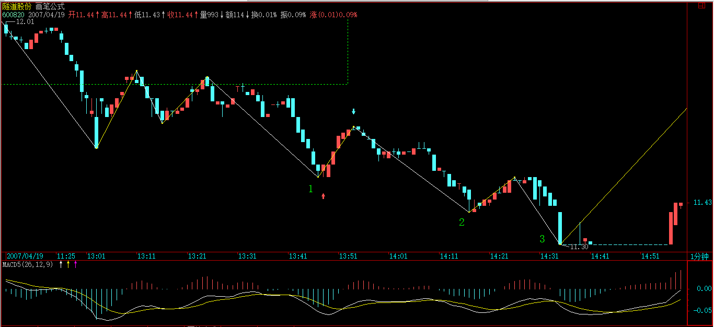
2007-4-19 21:55
[匿名] 工人时光 2007-04-19 21:25:26
我们上班一族的面对这种情况可怎么办呢？没事的时候在家，往往关键的一天却在上班。怎么处理这种情况啊？
==
如果你是做日线级别的，从去年拿到现在，那这样的震荡算得了什么？
关键是操作的级别，没时间，技术不好，就操作级别大的。
2007-4-19 21:58
[匿名] 三藏 2007-04-19 21:55:55
老大，今天早上的下是怎么造成的？没看出来！还有，下午最后的上为什么那么有力度？没有背啊！
==
要搞清楚和哪一段比较，如果1分钟看不清楚，看5分钟的，这种黄白线没回抽的，当然不会是5分钟的背驰，
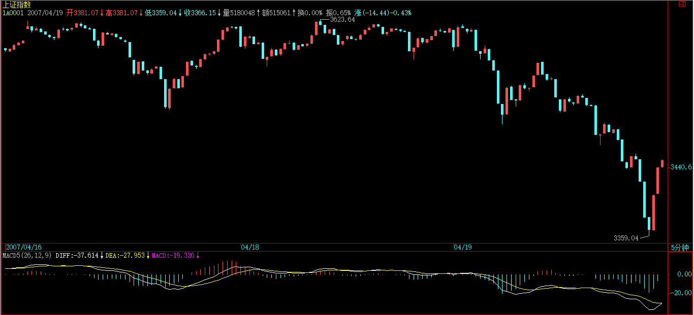
但一定是5分钟以下级别的背驰，很清楚可以看出该是哪两段比较。
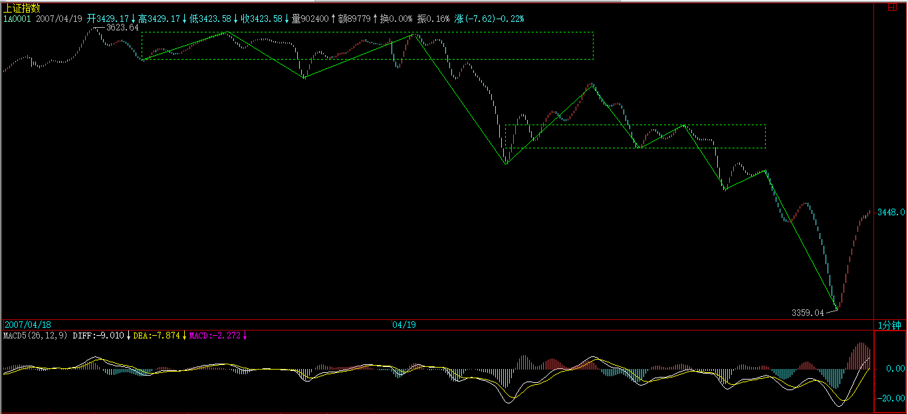
2007-4-19 22:06
今天的速度太慢，很难把回复贴上去，大概今天震荡厉害，把人都震到新浪上来了。市场经验是需要磨练的，平等对待买卖点，这样你的技术会提高一个层次。
如果技术不好的，例如本ID让你看5日线，如果连5日线都看不好，那就是心态问题了，这就要彻底反省了。心态不好，脑子里总是有幻想，而不是根据市场实际走势来，这样，学什么技术都没用的。
知道，明白，看得懂，和能操作好，这里的差距大了去了，所以，以前本ID就说过，都学本ID的理论，并不会影响本ID，最后比的是人本身。
如果连最基本的，永远不追涨杀跌都做不到，那就没什么可说的。
先下，再见。
2007-4-19 22:16
本课目录
教你炒股票46：每日走势的分类【网文】远看小问题，近看大问题啊！【网文】缠论操作的最新发现《论语》详解：给所有曲解孔子的人（64）孟懿子问孝。 子曰：“无违”。 樊迟御，子告之曰：“孟孙问孝於我，我对曰，“无违。”” 樊迟曰：“何谓也？” 子曰：“生，事之以礼；死，葬之以礼，祭之以礼。”子游问孝。 子曰：“今之孝者，是谓能养。至於犬马，皆能有养；不敬，何以别乎。”